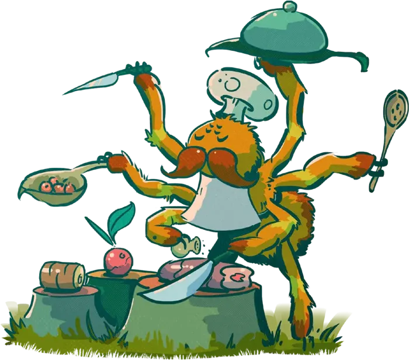

‹
Am Waldrand
Fringewood
Straßen vom Feld zum WaldTekso QuailheartStump LakeDer Letzte BasarEine Nacht der FarbenNoch ein Versuch!Fringewood erkundenSaustiefen
Wurzelbau
Königsfluss
Fringewood
S. 279Der Waldrand, wo die Bäume zögern und die Felder übernehmen: leicht zu bereisen, voller Händler, Abenteurer und Leute, die mit Abenteurern Geld verdienen. Die folgenden Einträge stehen für Orte, Merkmale und Wahrzeichen, auf die eine Käferbande auf ihrer Reise stoßen könnte.
Tekso Quailheart (Titan)S. 278

Füchse sind eher für List als für Mut bekannt. Vielleicht trifft das deshalb nicht auf Tekso zu – er ist ein Fuchs, der weder listig noch mutig ist. Vielleicht …- Tekso hat irgendwo im Wald ein Stück seines buschigen Schwanzes verloren, traut sich aber nicht, es zu holen. Bringt es ihm jemand zurück?
- Er liebt Geschichten und tauscht gern Erzählungen über den tiefen Wald.
- Er kann mutig sein, er ist nur noch nicht hineingewachsen.
Stump Lake (Wahrzeichen)
Schlicht benannt ist Stump Lake ein … nun, das findet ihr selbst heraus. Vielleicht …
- Im Stumpf mitten im See steckt ein uraltes Beil. Wer es befreit, ist theoretisch König des Sees – muss aber erst etwas Fünfzigmal-so-Großes heben.
- Wasserfreunde meiden den See, außer sie haben eine Abmachung mit den örtlichen Froglins.
- Cassius Carvexo, ein silberrückiger Karpfen, taucht nur zur Nacht der Farben auf – letzte Woche fehlte er.
Der Letzte Basar (Wahrzeichen)
Rund um den allerersten Baum am Weg in die Wildnis: Die Käfer hier wollen Beute, keinen Ruhm. Vielleicht …
- Für jede zäh aussehende Abenteurergruppe gibt es einen Wettpool. Wie lange hält diese Truppe wohl durch?
- So viel Zeug auf den Tischen, dass ein Stoß an der falschen Stelle eine sehr teure Lawine auslöst.
- Mindestens die Hälfte der Stände verkauft 100 % garantierten Schweineschutz.
Fringewood
erkunden
S. 279
Wahrzeichen 5
| 1 | Ein kaputter Spaten an einem Baum. |
| 2 | Seehäuser auf Streichholz-Stelzen. |
| 3 | Ein alter Stiefelabdruck, jetzt Schwimmbad. |
| 4 | Ein Händlerkarren, für immer im Schlamm. |
| 5 | Ein Vogelnest voller lecker aussehender Eier. |
| 6 | Ein Kartenmacherladen in einem Kompass. |
NSC ·
| 1 | Gol & Galo, zwei Schnecken, die die Zukunft sehen. |
| 2 | Long Lavaka, eine Gottesanbeterin auf Wanderschaft. |
| 3 | Sanjiv, ein Tabakkäfer mit örtlicher Medizin. |
| 4 | Oboe, ein Tausendfüßler-Bauer in der Pause. |
| 5 | Cedric Calo, Händler für Schweine-Amulette. |
| 6 | Lady Giis, verbannte Libellen-Adlige. |
Ereignisse ·
| 1 | Ein Fest der Two-In-Ones mit sich ausbreitenden Flammen. |
| 2 | Streit zwischen zwei Händlern. |
| 3 | Raupen auf Klassenfahrt zum Waldrand. |
| 4 | Ein kleines Beben, die Sonne wird etwas dunkler. |
| 5 | Ein Behelfszelt stürzt ein, die Nachbarn johlen. |
| 6 | Ein Koch verteilt Kostproben: in Dreck gebratener Dreck. |